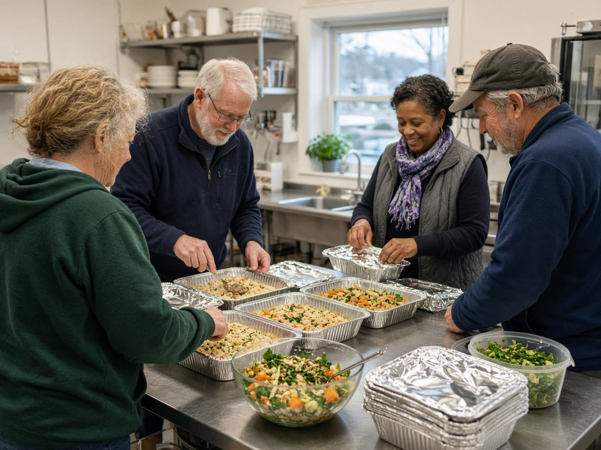

Volunteer
We need hands more than we need speeches.
Breakfast, meal packing, fundraising, job mentoring, sitting with someone while they call MassHire. If you have a Tuesday morning or a Tuesday night, we can use it.

Where people are needed
- The breakfast table. Set up, sit with a new face, stay to wipe down.
- The kitchen. Pack meals for people who cannot make it to Falmouth that morning.
- Work. Mock interviews, resume eyes, a ride to a first shift.
- The map. Help someone call a clinic, a pantry, a landlord — and stay on the line.
Sign up to volunteer
No account needed. Tell us where you want to help and we will write you.